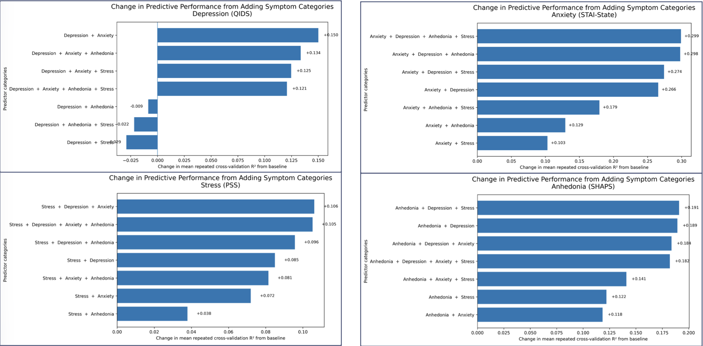

Machine Learning · Neuroimaging · Mental Health
Mental Health Symptom Severity
Can behavioral measures and resting-state fMRI predict continuous depression, anxiety, stress, and anhedonia severity?
The question
This project uses the Transdiagnostic Connectome Project to investigate whether behavioral measures, resting-state fMRI, or their combination can predict continuous symptom severity.
The goal is not simply to maximize accuracy. I also wanted to test whether the imaging representation adds out-of-sample predictive information beyond the behavioral data.
Predictive performance
The clearest result was the difference between data modalities. Behavioral predictors produced strong cross-validated performance for several symptom outcomes, while imaging-only models performed below R² = 0. Adding the current resting-state fMRI representation did not improve the strongest behavioral models.

How much information crosses symptom domains?
I also tested whether predictor categories associated with other symptom domains improved prediction of each target. These experiments help characterize the degree to which depression, anxiety, stress, and anhedonia share predictive behavioral information.

Relationships among behavioral measures
Many behavioral and clinical measures are substantially correlated with multiple symptom outcomes. Examining this correlation structure is important for understanding feature overlap and for designing leakage-aware prediction experiments.

Approach
- Four continuous targets: depression, state anxiety, perceived stress, and anhedonia.
- Behavioral-only, imaging-only, and multimodal feature configurations.
- High-dimensional imaging reduction performed inside training and cross-validation folds.
- Repeated cross-validation on the training set followed by held-out evaluation after model selection.
- MAE, RMSE, and R² used to evaluate generalization.
What this project demonstrates
Experiment design
Leakage-aware preprocessing, consistent participant cohorts, repeated validation, and held-out evaluation.
Multimodal modeling
Direct comparison of behavioral, neuroimaging, and combined representations.
Interpretation
Distinguishing predictive performance from claims about causality or biological relevance.
Research communication
Reproducible outputs, validation audits, Streamlit, and a dedicated GitHub Pages project site.